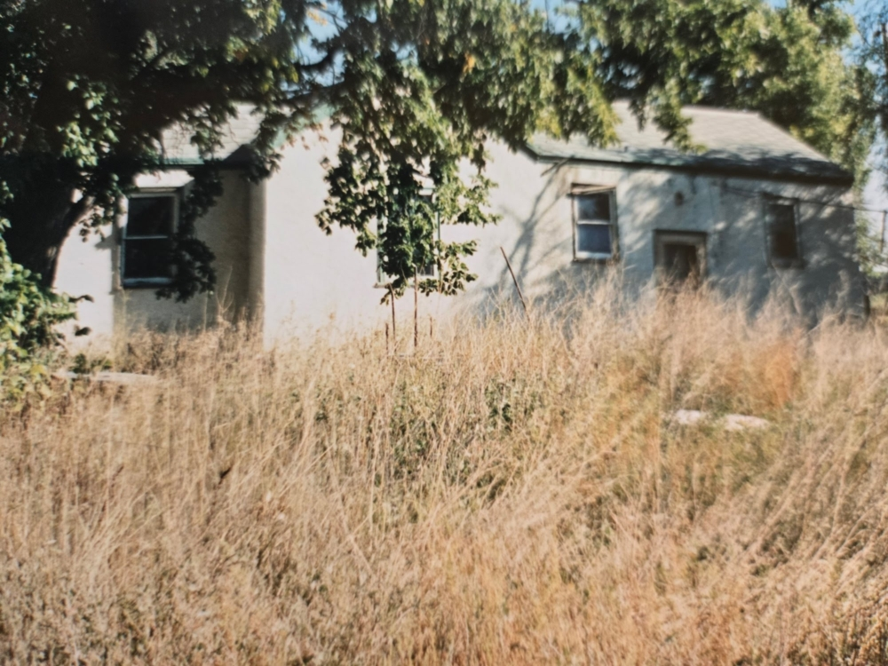

Prepared by: Martin
Compiled Date: March 1, 2025
**"The Christmas Tree Yard"**
In the summer of 1973, Flathead Valley buzzed with a whirlwind of events—county fairs, rodeos, and sun-soaked picnics that painted the season with laughter and dust. But as the days shortened and a crisp bite crept into the air, the focus shifted. Christmas tree season was barreling toward them, and the valley was ready to transform.
Across Flathead County, evergreens—Douglas firs, spruces, and pines—were felled and hauled to the local tree yard, their sticky sap and sharp needles filling the air with a resinous perfume. Tudie, a wiry teenager with calloused hands and a quick smile, joined her friends there, a ragtag crew of kids eager to earn a few bucks before winter settled in. The tree yard was a chaotic symphony: the thwack of hatchets trimming stray branches, the rustle of needles underfoot, and the rhythmic thump of twine as they bundled the trees into tight, neat packages. Hour after hour, they worked under the wide Montana sky, their fingers stained green and their clothes dusted with bark. The bundled trees were stacked high, destined for rail cars that would rumble off to cities across the United States—Chicago, Denver, maybe even New York—carrying a piece of the valley with them.
Years later, long after the tree yard had faded into memory, Tudie would pause whenever she passed a Christmas tree lot. The scent of evergreen—sharp, woody, and alive—would hit her like a time machine. Suddenly, she was back in 1973, laughing with her friends, the ache in her arms a badge of honor, the cold nipping at her nose. Those countless hours bundling trees hadn’t just been work—they’d stitched themselves into her soul, a thread of the past woven into every whiff of pine.

**The Home's Diary**
The crisp autumn air nipped at their cheeks as the three siblings stood side by side in front of the old trailer. A thin veil of mist clung to the ground, curling around their feet as the sun crept up over the horizon. Grandma’s trailer at Boorman House had been their home for as long as they could remember, a modest place with its creaky steps and the smell of fresh-baked bread lingering from breakfast.
"Come on, just one picture before you go," Grandma called from the doorway, her old camera in hand.
Joe adjusted his baseball cap, the logo of his favorite team slightly worn from years of being his prized possession. “Make it quick, Grandma. Gotta get to the bus stop.”
Deedee rolled her eyes but smiled anyway. “You’re not that important, Joe,” she teased. “Flathead High isn’t going to fall apart if you’re late.”
Tudie barely looked up, her brow furrowed as she studied the papers in her hands. "I have a history exam first thing," she muttered, flipping a page. The wind tried to steal one of her sheets, but she snatched it just in time.
Grandma chuckled. “Well, hold still for just a second.” She squinted through the viewfinder, then clicked the shutter. The camera whirred, freezing the moment in time—the three of them bundled in their jackets, standing before the home that had seen their laughter, their fights, their dreams.
With the picture taken, they grabbed their bags and hurried down to Ashley Lake Road, where the school bus would soon arrive. The wait was always cold, their breaths visible in the morning air. Riding the bus to Flathead High School was always an adventure in itself. The long drive into Kalispell meant that fellow students never knew what might happen along the way—icy roads, unexpected detours, or the occasional prank from some of the rowdier kids in the back seats.
Joe kicked at a rock, shifting on his feet. “Think we’ll make it on time today?”
Deedee smirked. “Depends if old Mr. Grady’s cows are in the road again.”
Tudie sighed, still lost in her notes. “As long as I make it in time for my test, I don’t care.”
As the distant rumble of the bus engine echoed down the road, the three siblings stood ready for whatever the morning ride had in store. With the wind at their backs and another school day ahead, they knew that no matter what, they'd take on the adventure together.